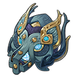

추천 광추
초보자 임무 시작 전
효과 명중을 채우고 필살기를 자주 사용합니다.
효과 자세히
5중첩에서 효과 명중이 40% 증가합니다. 방어력이 감소한 적을 공격하면 에너지를 8pt 회복하므로 블랙 스완·페라 등과 함께 쓰세요. 방어력 감소가 없으면 에너지 회복 조건을 충족하지 못합니다.
필요한 건 기다림뿐
공격할수록 빨라지고 별도의 지속 피해를 추가합니다.
효과 자세히
1중첩에서 가하는 피해가 24% 증가합니다. 공격할 때마다 속도 4.8%, 최대 3스택에서 14.4%를 얻습니다. 카프카의 기초 속도 100 기준으로 전투 중 최대 +14.4이며 마을 속도에는 포함되지 않습니다. 적 명중 시 흐름을 부여해 공격력 60%의 번개 지속 피해를 추가하며, 흐름은 감전으로 취급합니다.
땀방울처럼 빛나는 결심
적의 방어력을 낮춰 파티 전체의 피해를 돕습니다.
효과 자세히
5중첩은 100%의 기본 확률로 아직 함락이 없는 적에게 함락을 부여해 방어력을 1턴 동안 16% 낮춥니다. 낮은 중첩에서는 기본 확률과 감소량이 내려갑니다. 카프카의 효과 명중은 광추 밖에서 확보하세요.
밤 인사와 잠든 얼굴
적에게 디버프가 많을수록 카프카 자신의 피해가 증가합니다.
효과 자세히
5중첩에서 적의 디버프 하나당 해당 적에게 가하는 피해가 24%, 최대 3개에서 72% 증가하며 지속 피해에도 적용됩니다. 속도·효과 명중·에너지 회복을 주는 광추가 아니므로 해당 능력치는 유물로 보완하세요.
사냥감의 시선
효과 명중과 카프카 자신의 지속 피해를 함께 챙깁니다.
효과 자세히
5중첩에서 효과 명중 40%와 지속 피해 증가 48%를 제공합니다. 효과 명중 75%를 맞추기 쉬워지지만, 초보자 임무 시작 전과 달리 추가 에너지 회복은 없습니다.
추천 유물
밤낮의 경계를 나는 매 4 · 바다에 잠긴 루샤카 2
- 머리
 주옵션HP부옵션효과 명중 75%까지 · 속도 · 공격력%
주옵션HP부옵션효과 명중 75%까지 · 속도 · 공격력% - 손
 주옵션공격력부옵션효과 명중 75%까지 · 속도 · 공격력%
주옵션공격력부옵션효과 명중 75%까지 · 속도 · 공격력% - 몸통
 주옵션효과 명중 / 공격력%부옵션효과 명중 75%까지 (주옵션 제외) · 속도 · 공격력% (주옵션 제외)
주옵션효과 명중 / 공격력%부옵션효과 명중 75%까지 (주옵션 제외) · 속도 · 공격력% (주옵션 제외) - 다리
 주옵션속도부옵션효과 명중 75%까지 · 공격력%
주옵션속도부옵션효과 명중 75%까지 · 공격력% - 구체
 주옵션번개 속성 피해 / 공격력%부옵션효과 명중 75%까지 · 속도 · 공격력% (주옵션 제외)
주옵션번개 속성 피해 / 공격력%부옵션효과 명중 75%까지 · 속도 · 공격력% (주옵션 제외) - 매듭
 주옵션에너지 회복효율부옵션효과 명중 75%까지 · 속도 · 공격력%
주옵션에너지 회복효율부옵션효과 명중 75%까지 · 속도 · 공격력%
이 조합을 추천하는 이유
매 4세트는 필살기 후 행동 게이지를 25% 앞당깁니다. 바람 피해 2세트 효과를 위해 쓰는 세팅이 아닙니다. 루샤카는 에너지 회복효율 5%를 제공하고, 카프카가 첫 번째 자리가 아닐 때 첫 번째 캐릭터의 공격력을 12% 높입니다. 히실렌스나 블랙 스완을 첫 번째 자리에 두세요.
깊은 감옥에 수감된 죄수 4 · 즐거움에 취한 바다의 일각 2
- 머리

주옵션HP부옵션효과 명중 75%까지 · 속도 · 공격력% - 손
 주옵션공격력부옵션효과 명중 75%까지 · 속도 · 공격력%
주옵션공격력부옵션효과 명중 75%까지 · 속도 · 공격력% - 몸통 주옵션효과 명중 / 공격력%부옵션효과 명중 75%까지 (주옵션 제외) · 속도 · 공격력% (주옵션 제외)
- 다리
 주옵션속도부옵션효과 명중 75%까지 · 공격력%
주옵션속도부옵션효과 명중 75%까지 · 공격력% - 구체
 주옵션번개 속성 피해 / 공격력%부옵션효과 명중 75%까지 · 속도 · 공격력% (주옵션 제외)
주옵션번개 속성 피해 / 공격력%부옵션효과 명중 75%까지 · 속도 · 공격력% (주옵션 제외) - 매듭
 주옵션공격력% / 에너지 회복효율부옵션효과 명중 75%까지 · 속도 · 공격력% (주옵션 제외)
주옵션공격력% / 에너지 회복효율부옵션효과 명중 75%까지 · 속도 · 공격력% (주옵션 제외)
이 조합을 추천하는 이유
죄수 4세트는 대상의 지속 피해 하나당 방어력을 6%, 최대 세 개에서 18% 무시합니다. 바다의 일각은 공격력 12%를 주고, 전투 중 공격력 2400/3600 이상에서 지속 피해를 12%/24% 높입니다. 본인 피해를 높이는 선택이며, 파티 기폭 횟수를 늘리는 매 세팅과 목적이 다릅니다.
이 정도면 잘 키웠다
같은 파티·광추 기준의 육성 목표입니다. 조건은 [*]에서 확인하세요.
| 스탯 | 추천 스탯 | 준종결 | 종결 |
|---|---|---|---|
| 효과 명중 [*] 고통 행적은 각 아군이 자신의 효과 명중 75% 조건을 충족하면 그 아군의 공격력을 100% 높입니다. 카프카 자신의 조건을 외부 버프 없이 충족하는 기준이 마을 75%입니다. 단계가 올라가도 이 발동 기준은 변하지 않습니다. 현재 추천 광추에서 단순히 75%를 크게 넘기기보다 속도와 회전을 먼저 챙기세요. 별도 광추의 효과 명중 요구량이 있다면 그 조건을 따릅니다. | 마을 75% 이상 | 마을 75% 이상 유지 | 마을 75% 이상 유지 |
| 속도 [*] 160+는 현재 강화 카프카 가이드의 권장 목표이며, 170·180은 추가 투자 정도를 보여 주는 자료실의 편집 기준입니다. 고정된 발동 조건이나 행동 횟수 보장선이 아닙니다. 전광 1중첩은 공격 후 속도가 쌓여 3스택에서 +14.4가 됩니다. 다른 속도 버프가 없다면 마을 145.6/155.6/165.6은 최대 스택에서 각각 전투 160/170/180이며, 첫 공격 전부터 이 속도로 움직이지 않습니다. 매 4세트의 행동 게이지 증가, 파티원 버프와 전투 스킬 포인트 수급도 함께 확인하세요. 초보자 임무 시작 전의 에너지를 첫 공격부터 받으려면 블랙 스완·페라 등의 방어력 감소가 먼저 적용돼야 하며, 모든 파티에서 카프카가 특정 동료보다 빨라야 한다는 규칙은 아닙니다. | 전투 160+ | 전투 170+ | 전투 180+ |
| 공격력 [*] 본인 지속 피해를 보강할 때 쓰는 목표입니다. 2,500~3,000+라는 가이드 권장 범위를 편집상 세 단계로 나눴으며, 2,800에 별도 효과가 발동하는 것은 아닙니다. 매·루샤카 기폭 지원형은 이 숫자를 맞추려고 효과 명중·속도·에너지 회복효율을 희생하지 마세요. 고통 행적과 파티 버프는 전투 중 공격력에 더해집니다. 바다의 일각을 장착했다면 최대 효과 조건은 마을 3,600이 아니라 전투 중 공격력 3,600입니다. | 본인 피해: 마을 2,500+ | 본인 피해: 마을 2,800+ | 본인 피해: 마을 3,000+ |
| 에너지 회복효율 [*] 5성 에너지 회복효율 매듭 +15는 119.4%, 루샤카까지 장착하면 124.4%입니다. 부옵션 파밍으로 더 올리는 능력치가 아니므로 종결에서도 동일합니다. 본인 피해 세팅에서 공격력 매듭을 택하면 회복효율이 낮아질 수 있으며, 이를 지원형 기준으로 미달 판정하지 않습니다. 루샤카의 공격력 지원은 카프카가 첫 번째 자리가 아닐 때 첫 번째 동료에게 적용됩니다. 필살기 회전은 광추 발동·피격·처치 등에도 영향을 받아 이 수치만으로 고정할 수 없습니다. | 지원형 119.4~124.4% | 지원형 124.4% | 지원형 124.4% 유지 |
육성 단계의 기준
캐릭터·광추 Lv.80, 주요 행적 해금, 5성 유물 +15와 강화 상태 기준입니다. 추천·준종결·종결은 자료실이 나눈 육성 단계이며 공식 등급이나 모든 조합의 실전 최적값은 아닙니다. 속도는 전투 중 수치, 공격력과 효과 명중은 마을 수치로 구분했습니다. 기폭 지원형은 효과 명중 75%를 충족한 뒤 속도·회전을 우선하고, 본인 피해형은 여유 옵션으로 공격력을 보강하세요. 표의 모든 최상위 숫자를 동시에 맞춰야 파티가 완성되는 것은 아닙니다.
스탯 조건과 각주
- 효과 명중 고통 행적은 각 아군이 자신의 효과 명중 75% 조건을 충족하면 그 아군의 공격력을 100% 높입니다. 카프카 자신의 조건을 외부 버프 없이 충족하는 기준이 마을 75%입니다. 단계가 올라가도 이 발동 기준은 변하지 않습니다. 현재 추천 광추에서 단순히 75%를 크게 넘기기보다 속도와 회전을 먼저 챙기세요. 별도 광추의 효과 명중 요구량이 있다면 그 조건을 따릅니다. ↑
- 속도 160+는 현재 강화 카프카 가이드의 권장 목표이며, 170·180은 추가 투자 정도를 보여 주는 자료실의 편집 기준입니다. 고정된 발동 조건이나 행동 횟수 보장선이 아닙니다. 전광 1중첩은 공격 후 속도가 쌓여 3스택에서 +14.4가 됩니다. 다른 속도 버프가 없다면 마을 145.6/155.6/165.6은 최대 스택에서 각각 전투 160/170/180이며, 첫 공격 전부터 이 속도로 움직이지 않습니다. 매 4세트의 행동 게이지 증가, 파티원 버프와 전투 스킬 포인트 수급도 함께 확인하세요. 초보자 임무 시작 전의 에너지를 첫 공격부터 받으려면 블랙 스완·페라 등의 방어력 감소가 먼저 적용돼야 하며, 모든 파티에서 카프카가 특정 동료보다 빨라야 한다는 규칙은 아닙니다. ↑
- 공격력 본인 지속 피해를 보강할 때 쓰는 목표입니다. 2,500~3,000+라는 가이드 권장 범위를 편집상 세 단계로 나눴으며, 2,800에 별도 효과가 발동하는 것은 아닙니다. 매·루샤카 기폭 지원형은 이 숫자를 맞추려고 효과 명중·속도·에너지 회복효율을 희생하지 마세요. 고통 행적과 파티 버프는 전투 중 공격력에 더해집니다. 바다의 일각을 장착했다면 최대 효과 조건은 마을 3,600이 아니라 전투 중 공격력 3,600입니다. ↑
- 에너지 회복효율 5성 에너지 회복효율 매듭 +15는 119.4%, 루샤카까지 장착하면 124.4%입니다. 부옵션 파밍으로 더 올리는 능력치가 아니므로 종결에서도 동일합니다. 본인 피해 세팅에서 공격력 매듭을 택하면 회복효율이 낮아질 수 있으며, 이를 지원형 기준으로 미달 판정하지 않습니다. 루샤카의 공격력 지원은 카프카가 첫 번째 자리가 아닐 때 첫 번째 동료에게 적용됩니다. 필살기 회전은 광추 발동·피격·처치 등에도 영향을 받아 이 수치만으로 고정할 수 없습니다. ↑
성혼과 추천 돌파
명함으로도 지속 피해 기폭과 75% 효과 명중 조건의 공격력 지원을 사용할 수 있습니다. 추가 투자 시 파티 전체에 기여하는 성혼 1을 먼저, 그다음 성혼 2를 고려하세요. 전광 없이도 회전 지원 세팅을 만들 수 있습니다.
1공격 시 적이 받는 지속 피해 증가추천
공격을 발동하면 100%의 기본 확률로 대상이 받는 지속 피해를 2턴 동안 30% 높입니다. 강화 상태에서는 추가 공격에만 제한되지 않으며, 동료의 지속 피해에도 도움이 됩니다.
2모든 아군의 지속 피해 33% 증가추천
카프카가 필드에 있는 동안 적용됩니다. 강화 전 수치인 25%가 아니라 33%이며, 지속 피해 파티에 더 투자할 때 고려할 성혼입니다.
3전투 스킬 +2 · 일반 공격 +1
전투 스킬의 직접 피해와 지속 피해 기폭 배율이 높아집니다.
4자신의 감전 피해가 발생하면 에너지 회복
적이 카프카가 부여한 감전으로 피해를 받으면 에너지를 2pt 회복합니다. 모든 동료의 지속 피해가 이 효과를 발동시키는 것은 아닙니다.
5필살기·특성 레벨 +2
필살기의 감전 및 기폭 배율과 특성의 직접 피해가 높아집니다.
6감전 배율 강화 · 지속 시간 +1턴
필살기·비술·특성 추가 공격이 부여하는 감전의 피해 배율이 156%p 높아지고 지속 시간이 1턴 늘어납니다. 카프카 자신의 감전을 강화하는 고투자 성혼입니다.
추천 파티


기본 운영과 행적
지속 피해를 터뜨리는 역할
카프카는 번개·공허 캐릭터입니다. 동료가 걸어 둔 지속 피해를 전투 스킬·필살기·추가 공격으로 즉시 발생시키므로, 함께 편성한 지속 피해 딜러의 육성도 중요합니다.
- 강화 전투 스킬은 주목표뿐 아니라 인접한 적의 지속 피해도 터뜨립니다.
- 고통 행적은 효과 명중이 75% 이상인 아군의 공격력을 100% 높입니다. 카프카 자신도 조건을 충족하면 적용받습니다.
행적 우선순위
필살기와 전투 스킬을 우선 올리고 특성을 이어서 강화하세요. 일반 공격은 후순위입니다.
- 고통(승급 2단계): 효과 명중 75% 조건의 공격력 지원을 해금합니다.
- 가시(승급 6단계): 필살기 후 추가 공격 횟수를 1회 회복하고, 추가 공격으로 대상의 지속 피해를 기존 피해의 80%만큼 터뜨립니다.
- 약탈(승급 4단계): 감전 상태의 적이 처치되면 에너지를 5pt 회복합니다.
간단한 운영 순서
- 블랙 스완·히실렌스 등 동료의 지속 피해를 먼저 적용한 뒤 카프카의 전투 스킬과 필살기로 터뜨리세요.
- 강화 특성의 추가 공격은 동료의 일반 공격뿐 아니라 적에게 발동하는 다른 공격으로도 유발합니다. 발동 가능 횟수는 최대 2회이며 카프카 턴 종료 시 1회를 회복합니다.
- 초보자 임무 시작 전은 적의 방어력 감소가 필요합니다. 루샤카를 쓸 때는 지원할 동료를 편성 첫 번째 자리에, 카프카는 다른 자리에 두세요.
- 매 세트와 전광은 각각 행동 게이지와 속도에 영향을 줍니다. 전광 3스택이 쌓이기 전의 첫 행동을 최대 속도로 가정하지 마세요.
기준과 출처 · 2026-11-25
4.7 게임 데이터의 강화 상태와 Prydwen 강화 후 가이드를 대조했습니다. 장비 추천은 파티별 선택지이며, 4.7 전체 조합의 새 피해 시뮬레이션은 아닙니다.